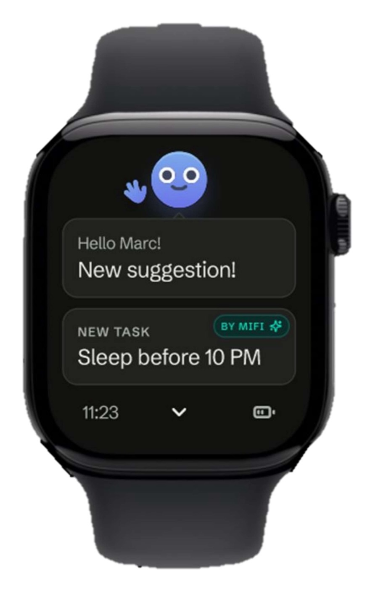
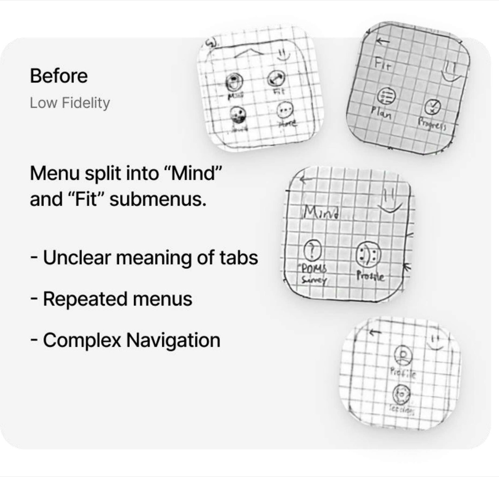
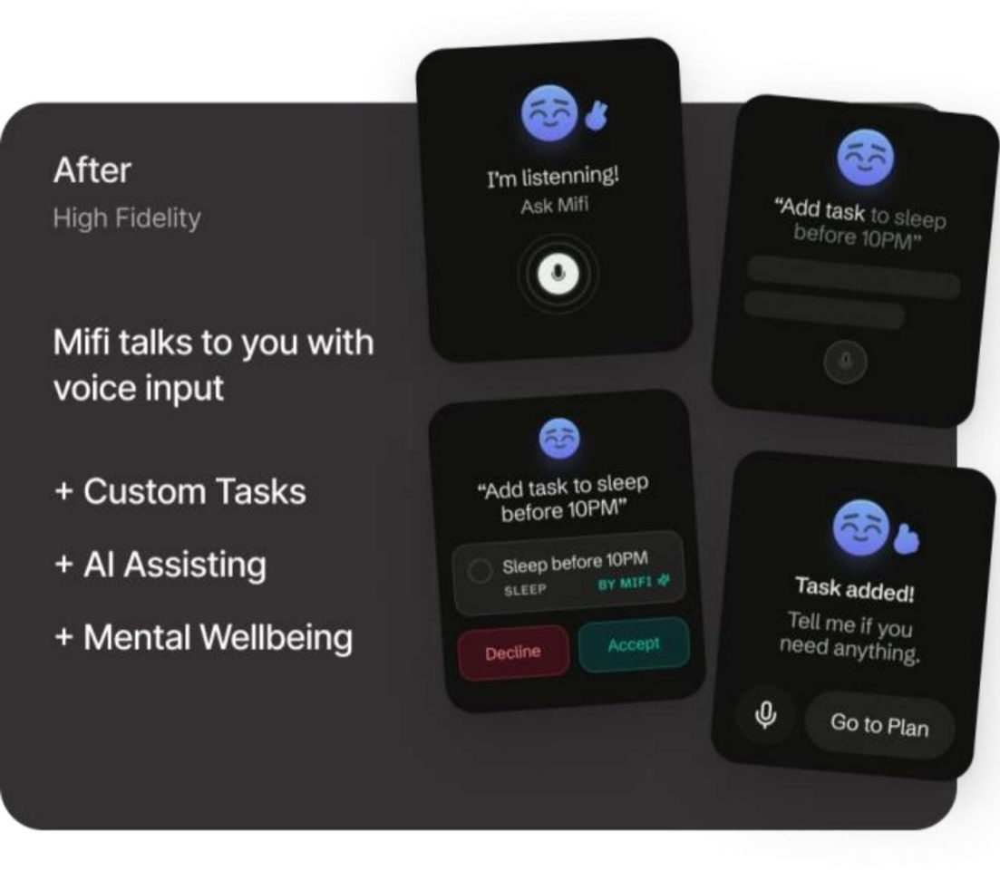

User-Centered Design · Design Lead
MindFit: mental wellbeing on your wrist
Amateur athletes deal with performance anxiety and pressure too, but almost all the support goes to professionals. MindFit is a smartwatch assistant that adapts training, sleep and nutrition to how you feel.

Research
We targeted young adults and young professionals who exercise, whether casually or competitively.
- Semi-structured interviews with (semi-)professional athletes, and a survey with 23 respondents.
- Thematic analysis, then two personas, a flow model, scenarios and a storyboard.
- Secondary research on the Profile of Mood States (POMS), which became the basis of the mood survey.
Most respondents believed an app like this could help them, and wanted real-time warnings when they were missing goals or feeling too stressed.
From paper to high fidelity
We first sketched a phone plus watch app, then focused on the watch alone. We tested paper prototypes with Wizard of Oz and think-aloud, and iterated on the tasks and flows. As Design Lead, I was responsible for the high-fidelity prototype:
- A style guide built on Radix Colors, so text contrast met WCAG targets on a dark watch UI.
- A single unified menu to replace the confusing “Mind” / “Fit” split found in testing.
- Voice-first input: tapping Mifi's face starts a conversation, because typing on a watch is painful.
- An onboarding flow, and an expressive assistant character that reacts with empathy or enthusiasm.


Evaluation
We tested the final design with 12 participants who exercise regularly. They completed the same tasks as in the paper tests, then filled in the SUS and AttrakDiff questionnaires.
AttrakDiff placed MindFit in the “connective” and “integrating” quadrants, which matched our goal of bringing people together around training. One limitation we noted: voice-first input excludes people with speech impairments and doesn't work well in noisy places.